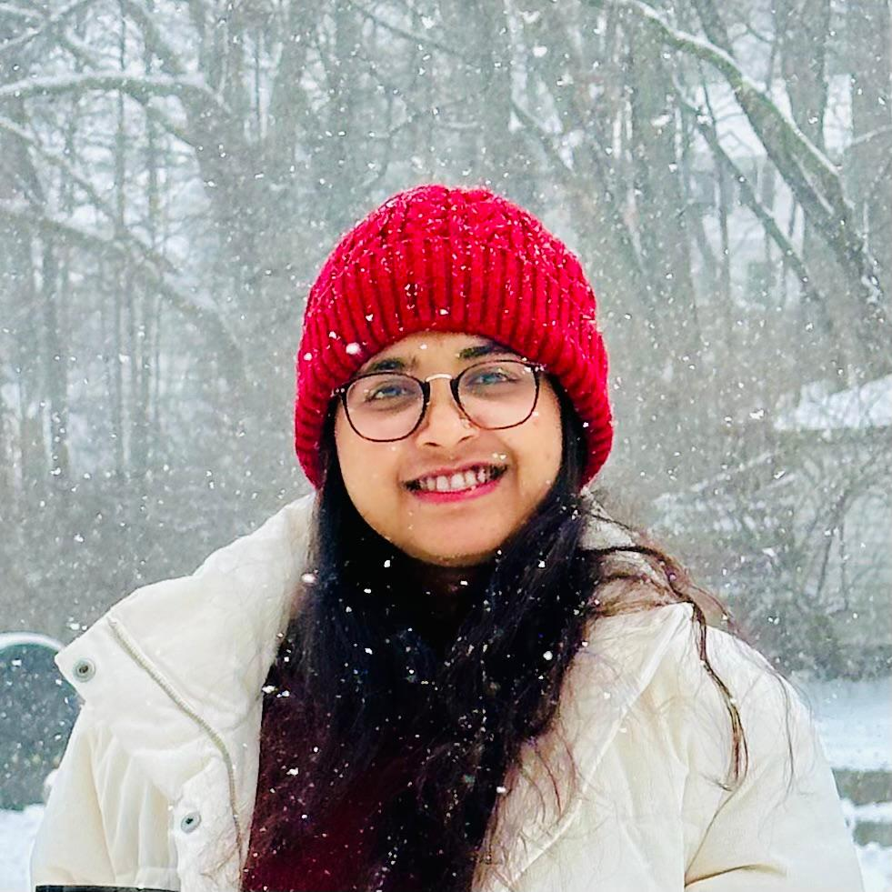

Objective
Recent computer science graduate seeking admission to a Master’s program to advance expertise in machine learning and deep learning, with interests in CNN architectures, computer vision, accessibility, and human-computer interaction.
Projects
Numerical Sign Language Detection (Thesis Project)
- Built a CNN-based model to recognize Bangla sign language.
- Used transfer learning to improve performance and reduce training time.
- Applied preprocessing and data augmentation for robustness.
- Targeted sign-language translation and sign-to-text conversion use cases.
Hospital Management System (Course Project)
- Designed relational database tables for patients, doctors, appointments, billing, etc.
- Used normalization, ER modeling, and foreign keys for consistency.
- Implemented core operations like registration, scheduling, history tracking, invoicing.
Skills
- C
- C++
- MATLAB
- Java
- Python
- Android
- CNN
- Deep Learning
- Computer Vision
- Transfer Learning
- OpenCV
- TensorFlow / PyTorch
- Laravel
Volunteer
Digital Marketing Lead & Technical Officer — ALO Foundation
- Led digital marketing initiatives to increase awareness and fundraising.
- Managed technical infrastructure and online presence.
- Coordinated relief support activities for underprivileged communities.